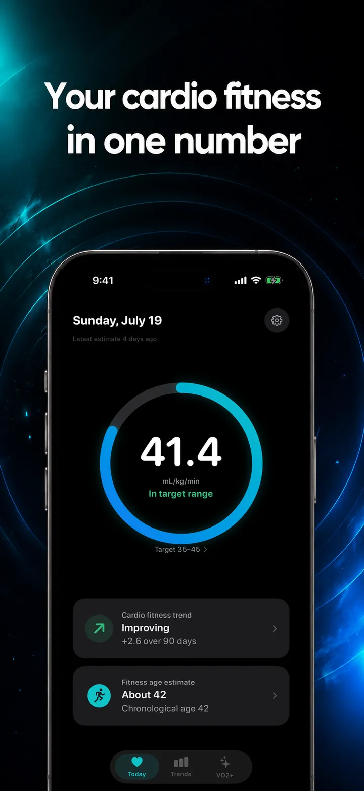
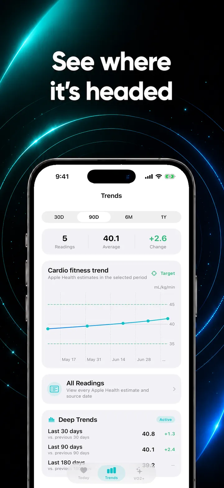
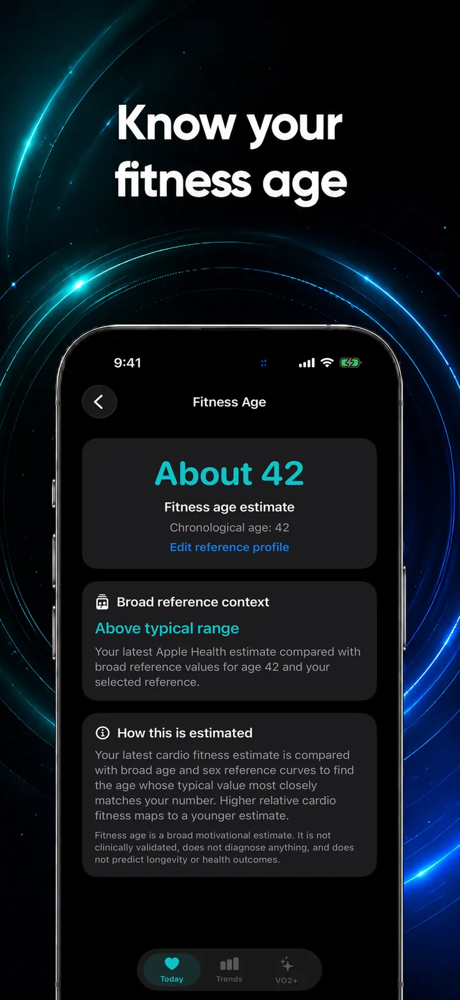
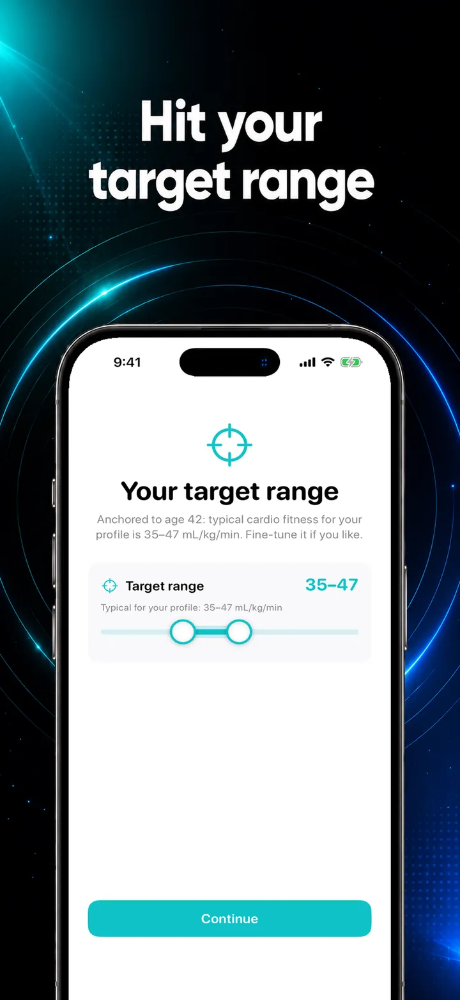
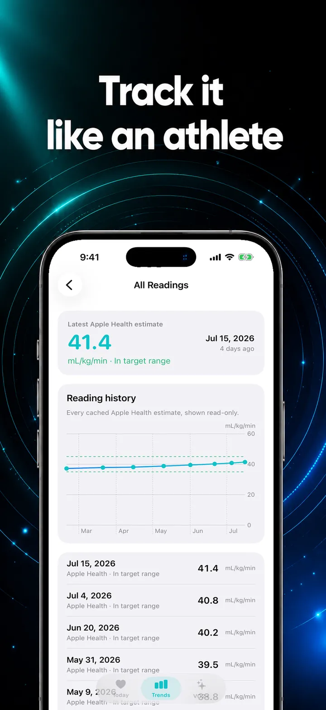
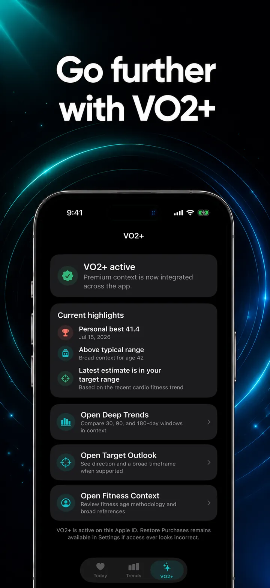

VO2 Max & Cardio Fitness is a VO2 max app for iPhone and Apple Watch. Apple Health already estimates your VO2 max; this app makes it readable with the trend, a target range, a year of history, and a fitness-age estimate.
iPhone · Apple Watch · Widgets
Download for free





Your Apple Health VO2 max estimate, its trend, a target range, a year of history and a fitness-age estimate. Free to start. VO2+ adds the deeper context.
The most recent Apple Health cardio fitness reading, with its date, in large clear type.
A plain-language read on where your aerobic fitness is heading.
Every estimate Apple Health has stored, charted so seasonal dips and training blocks are obvious.
Your current VO2 max and trend without opening the app.
Check the number on your wrist, with complications for your watch face.
A personal target range for your age and sex, so the number has a reference point.
Included with VO2+
A fitness-age estimate derived from your cardio fitness, with the methodology explained in the app.
Included with VO2+
Clear instructions on the outdoor walks and runs Apple Watch needs to produce an estimate.
The app reads cardio fitness and never writes anything back to Apple Health.
Yes. The app reads cardio fitness estimates from Apple Health only after you grant permission, and never writes Health data. Health and profile values are processed and stored on your devices. Nothing is sold, used for advertising, or uploaded to a server. Apple and RevenueCat process purchases only; no Health data is sent to them.
Privacy Policy →How it's built.
Apple Watch estimates your VO2 max on outdoor walks, runs, and hikes, and then buries it in the Health app behind a chart most people never open.
This app pulls that estimate to the front: the current value, whether it's improving, a target range for your age, a year of history, and a fitness-age read. No logging, no workouts to start, no account. Open it and the number is there.
The dashboard, trend, widgets, and Apple Watch app are free. VO2+ is a monthly or yearly plan (both with a 7-day free trial for eligible new subscribers), or a one-time lifetime purchase. Prices are shown in the app before you buy and vary by region.
Target range. A personal range for your age and sex, so you can see how much headroom you have.
Fitness age. A broad estimate from your cardio fitness, with the methodology written out rather than hidden.
Full history. Every estimate Apple Health holds, going back further than the recent window.
Yes. VO2 Max & Cardio Fitness reads the cardio fitness (VO2 max) estimate stored in Apple Health and shows your latest value with its date, a trend, widgets, and an Apple Watch app with complications. It only reads Health data and never writes to it.
Apple Watch estimates VO2 max from outdoor walks, runs, and hikes. This app does not measure it itself, so it displays the estimate Apple Health already holds and explains which workouts produce one.
Usually there is no estimate yet, because Apple Watch needs enough outdoor walk, run, or hike data to produce one. If you have an estimate in Apple Health, check that you allowed the app to read Cardio Fitness. The app shows clear guidance when no estimate is available.
Fitness age is a broad estimate derived from your cardio fitness, and it is part of the optional VO2+ upgrade. The methodology is spelled out in the app instead of hidden.
Yes. Home Screen and Lock Screen widgets show your current VO2 max and trend, and the Apple Watch app includes complications for your watch face.
The dashboard, trend, widgets, and Apple Watch app are free, and no account is needed. VO2+ is optional and adds a target range, fitness age, and full history, with prices shown in the app before you buy and varying by region.
VO2 max from a wrist is an approximation, and fitness age is a broader one. The app is for fitness awareness only and does not diagnose, treat, cure, or prevent any health condition.
| Platform | iOS 17+, watchOS 10+ |
| Language | Swift 6 with strict concurrency |
| Framework | SwiftUI · HealthKit · WidgetKit · SwiftData |
| Data | Read-only HealthKit access, local only |
| Storage | Local cache shared with widgets via App Group |
| Widgets | Home Screen, Lock Screen, watchOS complications |
Nothing to log. The app has no input fields for fitness data. Everything it shows comes from HealthKit, so it never shows a made-up value.
Honest about estimates. VO2 max from a wrist is an approximation, and fitness age is an approximation of an approximation. The app says so and shows its method.
When there's no estimate. Plenty of users have no estimate yet. Instead of a blank chart, the app explains exactly which workouts generate one.
Read-only by design. Requesting write access to Health would have been easier for caching.
VO2 max and fitness age are broad estimates for fitness awareness. This app does not diagnose, treat, cure, or prevent any health condition, and it is not a substitute for professional medical advice.
Free on the App Store. No account required. VO2+ optional.
Download for free